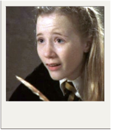

---------------------------------------------------------------------------------------"The most loyal and kindest school of all!"-----------------------------------------------------------------------------------------------
Hannah Abott

Hannah Abbott is characterized by her kindness, loyalty, and strong sense of community, traits often associated with Hufflepuffs. She is a member of Dumbledore's Army and plays a supportive role during the events of the series.
After graduating from Hogwarts, she eventually takes over as the landlady of the Leaky Cauldron, indicating her growth and responsibility. In the epilogue of "Harry Potter and the Deathly Hallows," it's suggested that she has a happy life, though specific details about her personal life are not extensively explored in the books. Would you like to know more about her background or her relationships with other characters?
Tonks's magic is particularly fascinating due to her Metamorphmagus ability, which allows her to change her physical appearance at will. This skill is rare and enables her to alter her hair color, facial features, and even her height, making her highly versatile in various situations.
Hannah Abbott comes from a humble background, and her mother is a Muggle. At Hogwarts, she is known for her friendly demeanor and is often seen as a supportive figure among her peers. She has a strong friendship with other Hufflepuffs, including Ernie Macmillan.
During her time at Hogwarts, she participates in Dumbledore's Army, showcasing her bravery and commitment to fighting against Voldemort's influence. After the war, her role as the landlady of the Leaky Cauldron represents her continued connection to the wizarding community and her desire to provide a welcoming space for witches and wizards.
Hannah’s character embodies themes of loyalty and perseverance, and while her story isn't deeply explored, she serves as a reminder of the importance of community and support within the broader narrative of the series. If you're interested in her relationships with specific characters or her role in certain events, let me know!